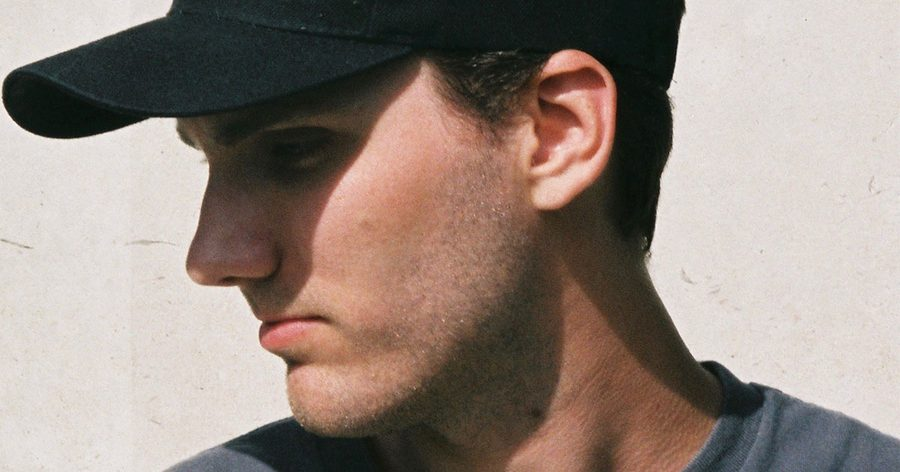

Raito Throws Down Rave-Heavy Techno With “Can You See”


France’s Raito already has a solid selection of releases under his belt on labels like Boysnoize Records and Brooklyn Fire, though he particularly impressed the legendary Carl Cox with his remix of Frankie Bones’ “Call It Techno,” which dropped on Cox’s Intec Digital stable last year. He was so impressed, in fact, Raito was asked back to produce an entire EP for Intec Digital. The three-tracker, Believe in Me, is out this week, and we’re previewing “Can’t You See.”
The final track on his new EP, “Can’t You See” is a result of Raito collaborating in the studio with T78, and it’s one hell of a stomper, indeed. Delivering powerhouse warehouse techno and vintage rave thrills in equal amounts, there’s a menacing stomp that marks this one out as dark and aggressive, its looped vocal sample hypnotic as all hell. Giving it a unique edge, though, are regular bursts of jungle percussion and old-school synths mixed in for an extra ravey feel.
“As soon as I heard ‘Can You See,’ I knew I wanted to sign it there and then,” Carl Cox tells Insomniac. “Raito’s production level is really high, and I’m looking forward to his debut EP with us and being able to support such a talent.”
Available December 14 via Intec Digital.
Follow Raito on Facebook | Twitter | SoundCloud
Follow T78 on Facebook | Twitter | SoundCloud
Follow Intec Digital on Facebook | Twitter | SoundCloud